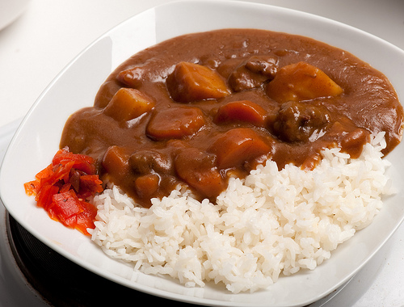

This meal is a Japanese style curry dish. This variation uses beef as its main protein, but can be swapped for different ingredients.
30 minute prep time
4 hours cook time
Ingredients
- 2 pounds beef
- 1 onion
- 2 stalks celery
- 1 carrot
- 1 potato
- 1 small package S&B medium-hot curry powder
- Rock salt
- Sake (optional)
- 1 clove garlic
- 1 can beef stock
- Water
Instructions
- Cut beef up into cubes, massage in rock salt and (optional) sake.
- Add oil and garlic into pot, along with beef cubes. Turn on high heat, stir until brown.
- Add water until level is about ½ an inch above meat. Lower to medium heat and scrape scum from top of water
- Let simmer for 2 hours
- Cut onions and celery into small pieces, cut potatoes and carrots into large cubes
- Add vegetables, beef broth, continue to simmer for 1 hour
- Add curry powder, continue simmering for ½ hours
- Turn off Heat
Pairs well with rice and bread. A variation for this recipie without meat calls for subsituting or omitting the beef, and replacing the beef broth with water.

Enjoy!
background image sources:
https://4scoin37ye-flywheel.netdna-ssl.com/wp-content/uploads/2014/06/japbeefcurry.jpg
http://farm7.static.flickr.com/6077/6076882995_f515eb5903.jpg